6.6.3 漢字の字体の包摂規準
6.6.3.1 漢字の字体の包摂規準の適用 附属書6に示す漢字の区点位置の例示字体は，それぞれの区点位置に対応する。さらに，その例示字体を構成する各部分字体が置き換えられた字体も，その置換えが6.6.3.2に示す包摂規準の範囲内にあるときは，その区点位置に対応する。
参考 各区点位置では，そこに包摂される字体は，相互に区別されない。
例 は，区点位置37-07の例示字体であり，37-07によって表現される。また，包摂規準a)(連番19)によって， 及び 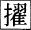 も同じ区点位置37-07に対応し，37-07によって表現される。したがって，この規格では，これらの三つの字体は相互に区別されない。
包摂規準は，次に従って適用するものとする。
a) 一つの区点位置に対して，字体の包摂規準を複数個適用してもよい。ただし，一つの部分字体に包摂規準の複数個を順次適用してはならない。
例 迩(38-86)には，d)(連番128)及びa)(連番31)の二つの包摂規準をそれぞれ適用する事ができる。この規格の例示字体の一つである 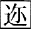 に対し，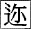 は包摂規準d)(連番128)を適用することによって，また 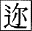 は包摂規準d)(連番128)及び包摂規準a)(連番31)を適用することによって，いずれも38-86に包摂される。したがって，この規格では，これらの三つの字体は相互に区別されない。
なお，二つの包摂規準が適用できる字体は，理論的には4種類が考えられるが，このうち包摂規準a)(連番31)だけを適用する字体の字形は存在が確認できない。したがって，6.6.1で禁止する包摂規準の演繹的適用を避けるため，ここでは3種類の字体についてそれぞれ字形を例示するにとどめた。
参考 6.6.4の過去の規格との互換性を維持するための漢字の包摂規準は，漢字の字体の包摂規準を適用する前に適用してもよい(6.6.4参照)。
b) 包摂規準は，他のいずれかの区点位置の漢字までも包摂するような適用を行ってはならない。
参考 ある包摂規準によって包摂されることが適当な字体が，この規格で互いに別の区点位置として区別されている場合は，当該包摂規準に“適用除外(規定)”として該当する区点位置を示した。
例1. 包摂規準f)(連番155) 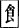 ・ を適用すると“飲”(16-91)及び“飮”(61-27)の区点位置が互いの字体を包摂してしまうので，これらのいずれの区点位置にも，包摂規準f)(連番155)を適用しない。このため，f)(連番155)には，“適用除外(規定)”として“飲”(16-91)及び“飮”(61-27)を示してある。
例2. 包摂規準c)(連番97) 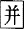 ・ 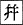 を適用すると“餅(44-63)”及び“餠”(81-22)の区点位置が互いの字体を包摂してしまうので，これらのいずれの区点位置にも，包摂規準c)(連番97)を適用しない。一方，これらのいずれの区点位置にもf)(連番155)は適用することができる。この結果
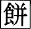 及び 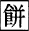 は44-63(例示字体“餅”)によって表現され，互いに区別されず，
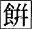 及び 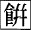 は81-22(例示字体“餠”)によって表現され，互いに区別されない。
例3. 靭(31-57)の例示字体である 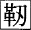 に対し，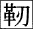 は，包摂規準f)(連番170)を適用することによって31-57に包摂されるので，この規格ではこれらの二つの字体は区別されない。ただし，この包摂規準を 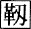 までも包摂するように適用すると，別の区点位置である“靱”(80-55)を包摂してしまうので，この包摂規準のこのような適用は行ってはならない。
目次にもどる。